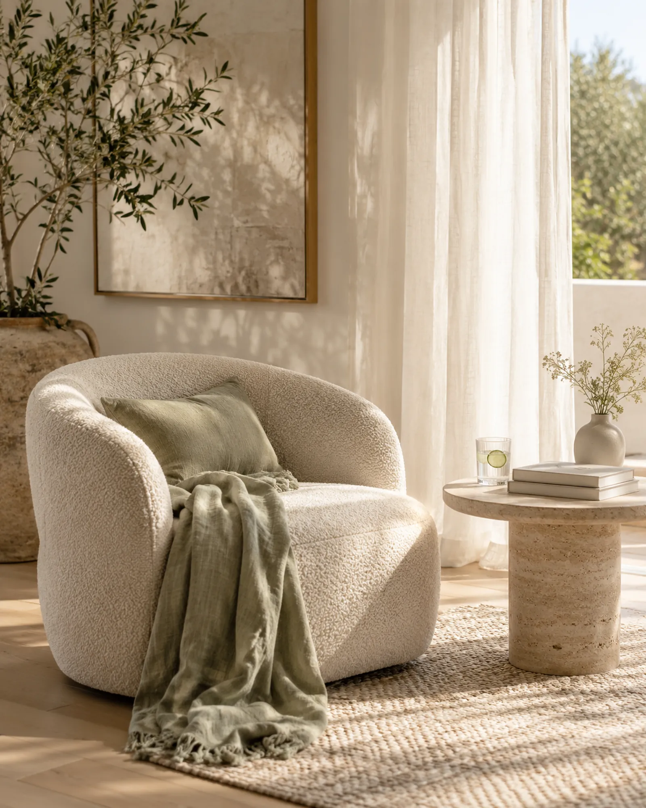
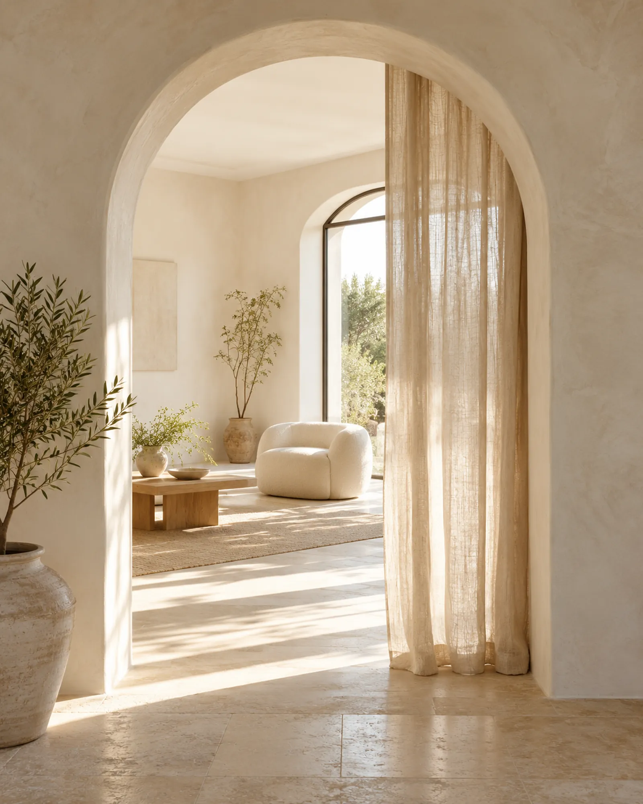
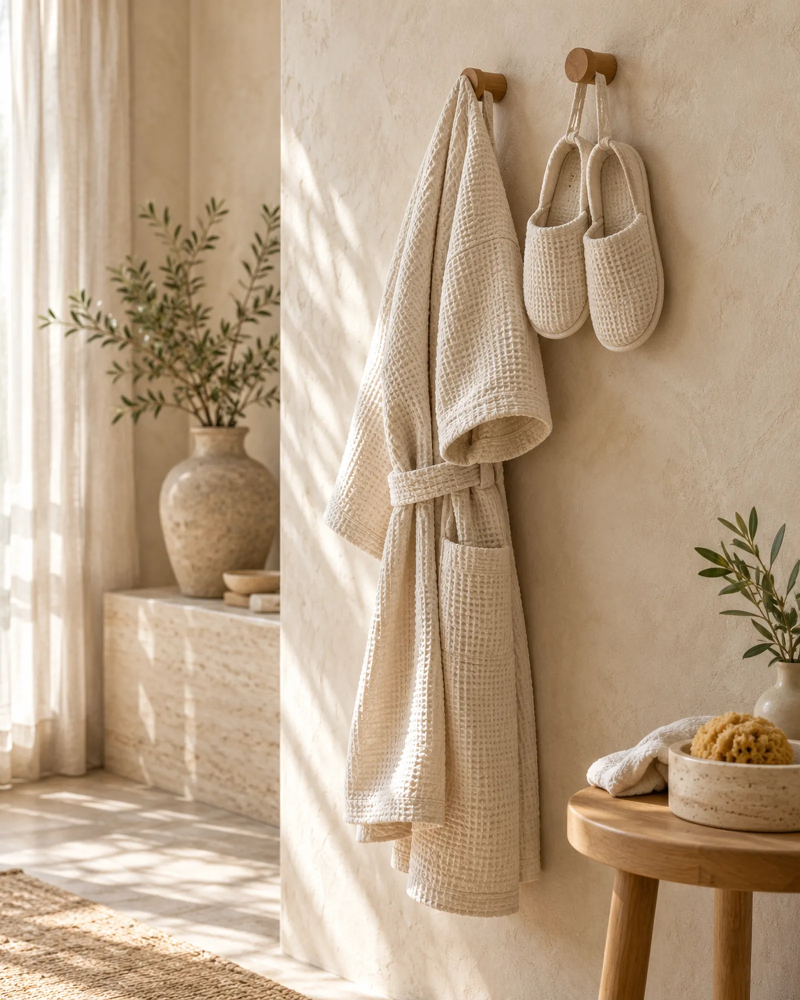
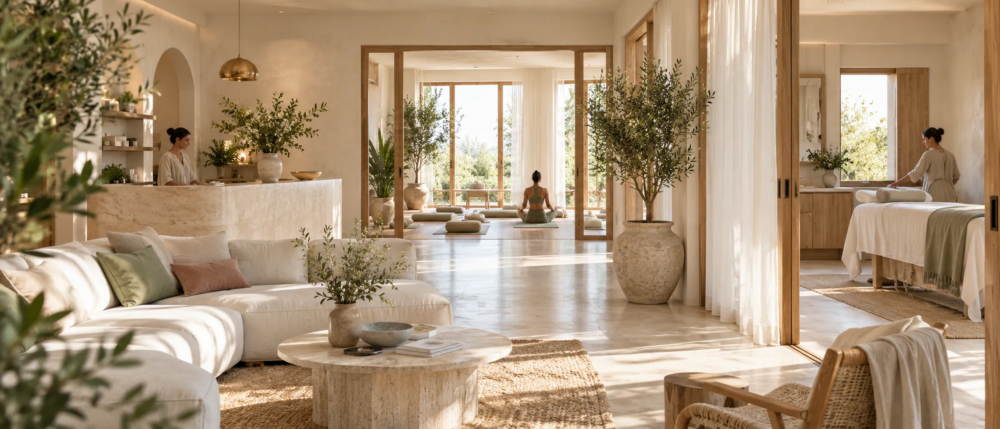

SALEANE photo library
40 generated candidates. Choose 8 to 12 by number. Fictional people and premises, for demo use.
01 · rooms/sunlit-treatment-room
02 · rooms/reception-morning

03 · rooms/waiting-nook
04 · rooms/lash-brow-room
05 · rooms/hair-studio-daylight
06 · rooms/nail-table
07 · rooms/couples-suite
08 · rooms/studio-exterior

09 · rooms/corridor-arch
10 · rooms/end-of-day-warm
11 · details/towels-stacked
12 · details/oils-tray
13 · details/tea-moment
14 · details/hot-stones

15 · details/robe-hook
16 · details/flowers-reception
17 · details/appointment-card
18 · details/window-light
19 · details/sage-linen
20 · treatments/signature-facial
21 · treatments/deep-tissue
22 · treatments/hot-stone
 23 · treatments/lash-lift
24 · treatments/brow-shape
25 · treatments/manicure
26 · treatments/hair-blowdry
27 · treatments/scalp-ritual
23 · treatments/lash-lift
24 · treatments/brow-shape
25 · treatments/manicure
26 · treatments/hair-blowdry
27 · treatments/scalp-ritual
 28 · treatments/body-wrap
29 · treatments/consultation
30 · people/practitioner-portrait-1
31 · people/practitioner-portrait-2
32 · people/practitioner-portrait-3
33 · people/practitioner-portrait-4
34 · people/owner-at-desk
35 · people/team-morning
28 · treatments/body-wrap
29 · treatments/consultation
30 · people/practitioner-portrait-1
31 · people/practitioner-portrait-2
32 · people/practitioner-portrait-3
33 · people/practitioner-portrait-4
34 · people/owner-at-desk
35 · people/team-morning
 36 · moments/guest-arriving
36 · moments/guest-arriving

37 · moments/all-in-hand
38 · moments/settled
39 · guest/before-you-arrive
40 · guest/visit-label-background